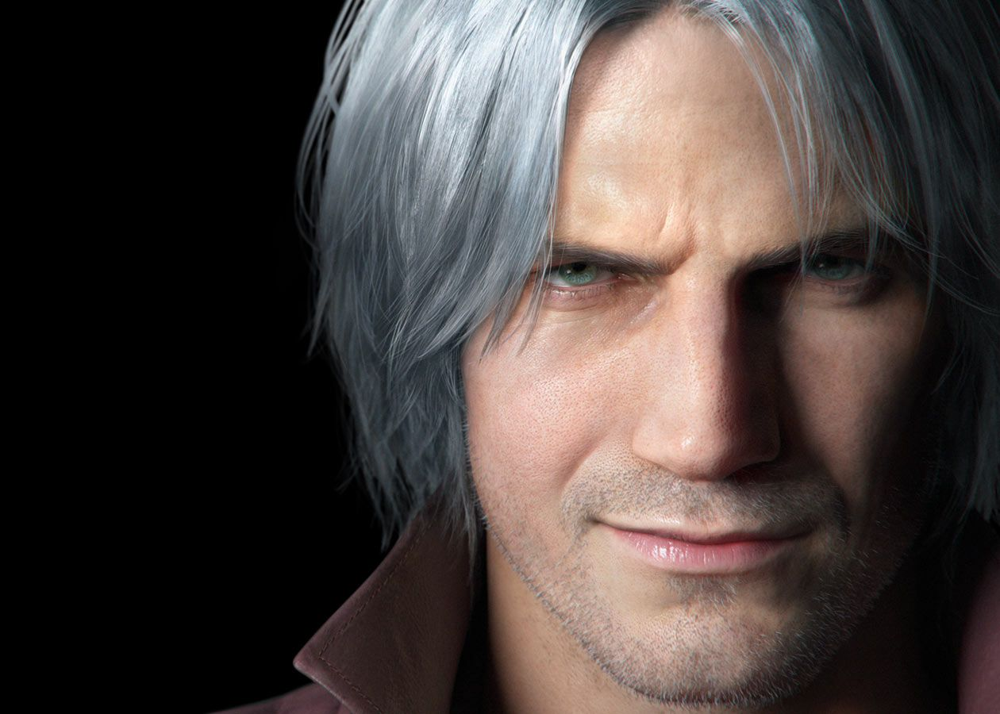
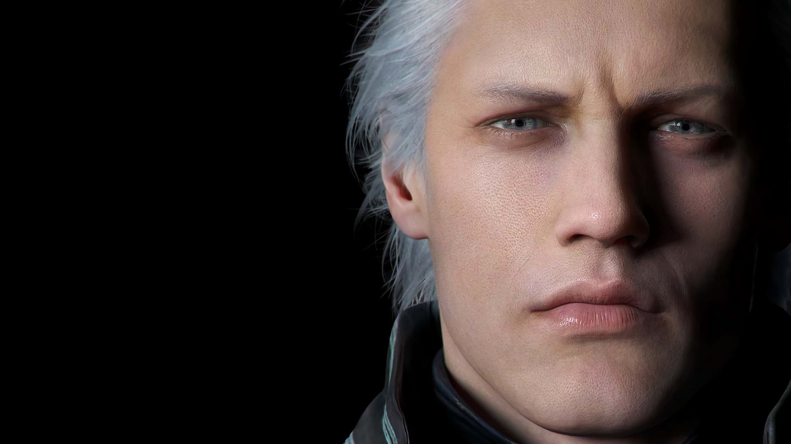
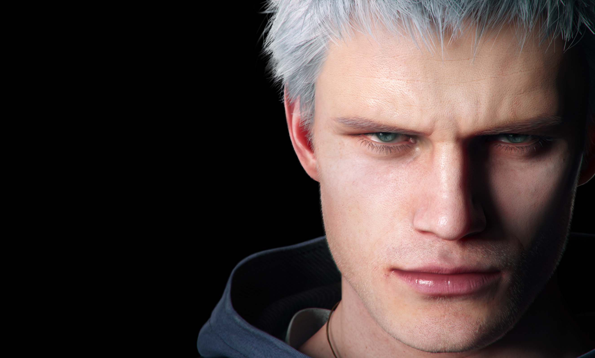
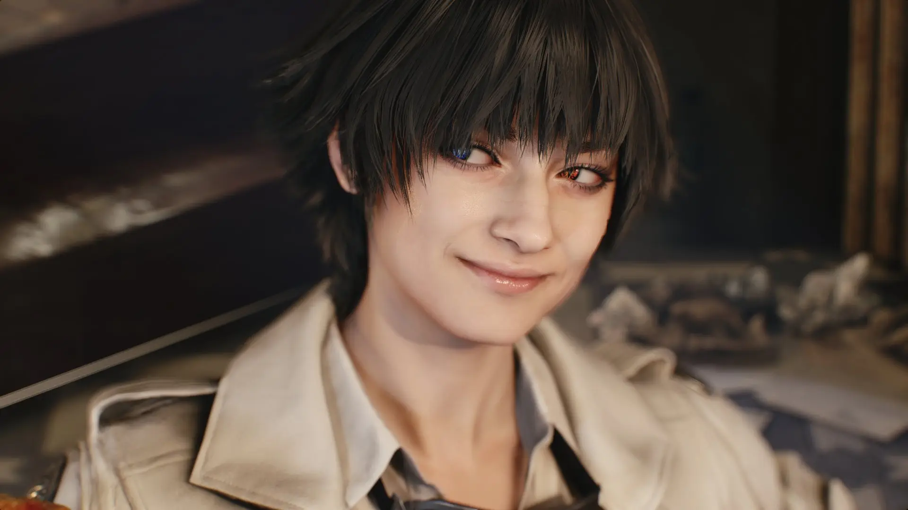
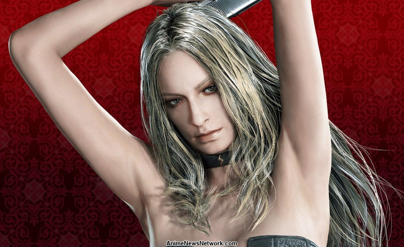
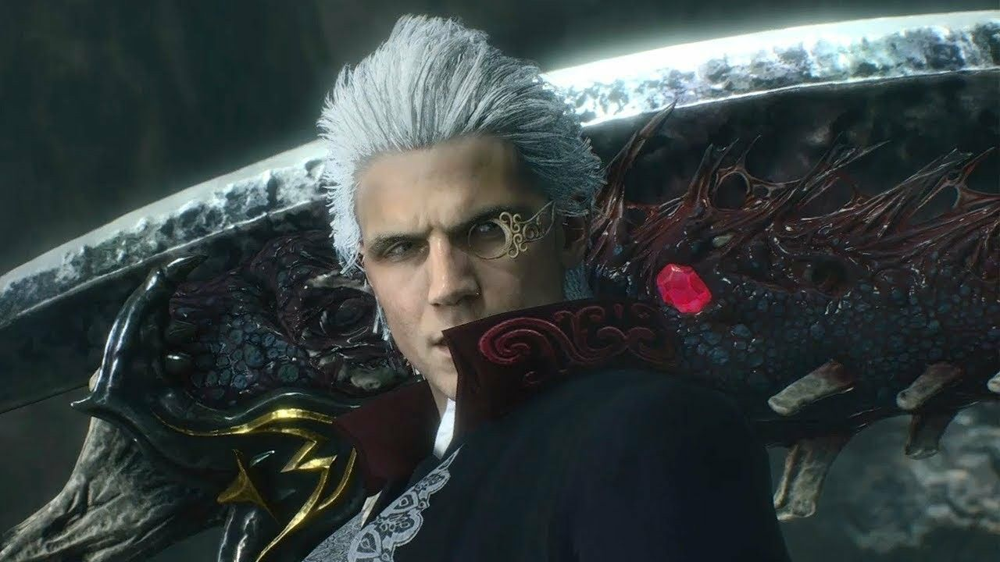
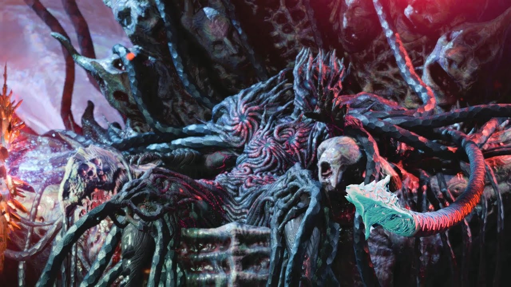

- Данте 
-
Данте главный герой серии Devil May Cry. Сын демона Спарды и земной женщины Евы. У него есть старший брат-близнец Вергилий. Данте - никто иной, как охотник на демонов; он гоняется за теми, кто убил его мать и поработил брата.
Данте довольно легкомысленный, тем не менее, никогда не отступает от своих позиций. Он никогда не показывает страха, невозмутим. Может быть серьезным, только тогда, когда ситуация требует этого. Любит шутить, насмехаться.
Очень любит пиццу и питается только ей. Ненавидит оливки, но они всегда ему попадаются (видимо в силу невезения), с чем он давно смирился. В аниме было показано, что он очень любит клубничный сандей. В первом томе манги упоминается, что он напился до такой степени, что предложил руку и сердце швабре.
- Вергилий 
-
Вергилий — старший брат-близнец Данте, который долгое время был одним из главных антагонистов серии Devil May Cry. После гибели их матери пути Вергилия и Данте разошлись, первый отверг свою человечность, и принял демоническое наследие их отца, Вергилий был готов сделать всё возможное ради получения силы Спарды.
В отличие от своего брата-близнеца Данте, энергичного и общительного, Вергилий спокоен, хладнокровен, собран и замкнут. Его мало заботит благополучие окружающих. Он непоколебим в своем стремлении к власти. Однако, несмотря на свою холодную и безжалостную манеру поведения, он благородный воин, который придерживается собственных правил морали.
- Неро 
-
Неро - один из главных героев серии Devil May Cry. В качестве игрового персонажа появился в Devil May Cry 4 и Devil May Cry 5. Неро вырос на изолированном острове Фортуна и служил Святым Рыцарем в Ордене Меча, религиозной группе, которая поклонялась Спарде и сражалась, чтобы защитить мир от демонов.
Неро довольно серьезный, сардонический и замкнутый. Поскольку Неро обладает холерическим характером, его чувства могут взять над ним верх, особенно если дело касается тех, кто ему дорог. Также Неро вспыльчив и часто действует импульсивно. Подобно Данте, Неро несколько высокомерен и самоуверен. Он разделяет привычку Данте небрежно болтать даже с самыми могущественными противниками, насмехается над ними и бросает саркастические замечания даже на поле боя.
- Леди 
-
Человек, охотница на демонов, впервые появившаяся в Devil May Cry 3: Dante's Awakening в качестве вспомогательного персонажа и босса. Дочь Аркхама. Леди поклялась отыскать своего отца и отомстить ему за смерть матери, и ее поиски столкнули ее с Данте[2] После событий Devil May Cry 3 становится сотрудником агентства «Devil May Cry». Также является игровым персонажем в Devil May Cry 4: Special Edition и вспомогательным персонажем Devil May Cry 5. Имя, которое она выбрала для себя - Леди - были подсказано ей Данте, настоящее ее имя Мэри.[2]
Леди яростна, несколько груба и достаточно сурова, чем сильно напоминает Данте. Она описана как "психотическая охотница на демонов". Однако, убив своего отца, она плачет, демонстрируя чувственную сторону своего характера.
Изначально она ненавидела всех демонов и полудемонов и хотела уничтожить их всех. Лучшим ее оружием в то время была вера в то, что она делает правое дело.
Тем не менее, со временем, познакомившись с Данте, она узнала, что Спарда действительно существовал, и что люди и демоны в равной степени способны быть как праведными, так и порочными.
Прообразом Леди стала Юлия Волкова из группы "Тату"
- Триш 
-
Загадочная женщина, сильно напоминающая мать Данте, Еву. Является одним из основных персонажей серии, хотя первоначально она была одним из врагов Данте.
Будучи марионеткой Мундуса, изначально Триш жестока и безразлична к окружающим, но после того, как Данте спас ее, она пробуждает свои человеческие чувства к нему и, в конечном итоге, жертвует собой, спасая его от нападения Мундуса.
После возрождения Триш присоединяется к Данте в его офисе, проявляя желание стать его напарником.
- Спарда 
-
могущественный демон-мечник, известен как «Легендарный Темный Рыцарь». Две тысячи лет назад в нем «проснулась справедливость» и он в одиночку одолел Мундуса и его легионы. Запечатывая Демонический мир, чувствуя, что его сила стала слишком великой, он намеренно запечатал себя и свою демоническую силу.
Люди считают его спасителем, демоны же предателем. Во время войны он запечатал врата ада и тем самым сохранил человеческую расу.
Он полюбил земную женщину Еву, от которой у него два сына близнеца Вергилий и Данте. Он находится в рабах у злого Мундуса, и не ясно жив ли он сейчас.
- V
-
человек, связанный с Демоническим миром. Он выступает в качестве клиента агентства Данте, обратившегося к нему с просьбой разобраться с Уризеном. Позже выясняется, что на самом деле V — человеческая часть Вергилия: воплощение его сожалений и мудрости.
В противоположность напыщенному Данте и вспыльчивому Неро V сдержан, спокоен и замкнут. Он вежлив со всеми, но скрытен, и не говорит больше, чем того требуют обстоятельства, потому окружающие часто задаются вопросом, могут ли доверять ему.
- Уризен 
-
Уризен - это имя демона, который носит титул Короля Демонов и является главным антагонистом Devil May Cry 5. "Уризен" - это демоническая половина души Вергилия, ставшая, как и V, отдельным существом; воплощением его жажды власти и силы.